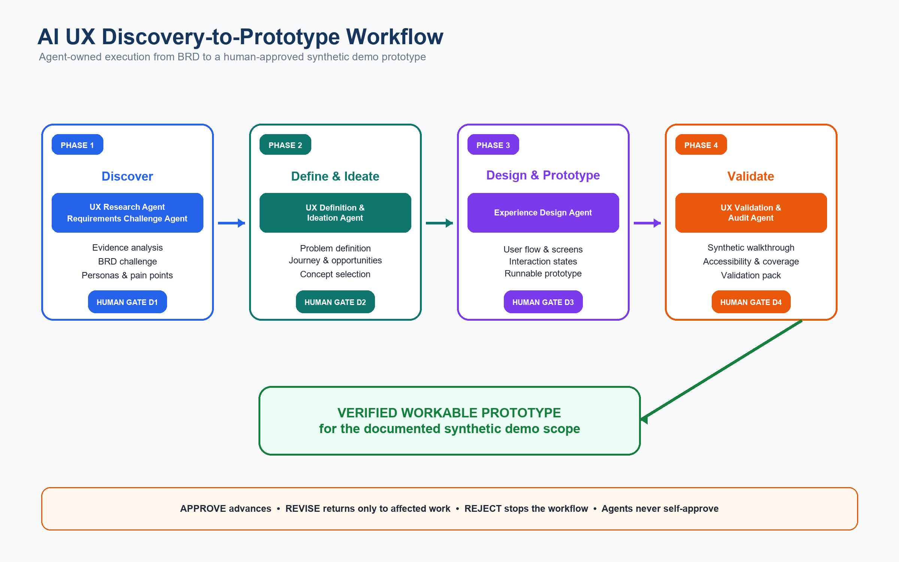
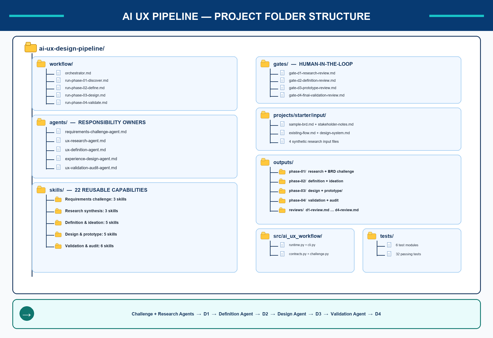

No invented research
Synthetic inputs remain visibly labelled and are never presented as real-participant findings.
Deliverable 01 · AI Design Pipeline Documentation
A reusable agentic workflow that separates evidence from assumptions, assigns work to specialist agents, and requires explicit human approval at every decision gate.
Interactive architecture
Select a phase to inspect its owners, skills, outputs, and gate.

Specialist agent model
The orchestrator routes work but never substitutes for the specialist agent or approves a human gate.
Traceable deliverables

Safety and evidence governance
Synthetic inputs remain visibly labelled and are never presented as real-participant findings.
Facts, BRD statements, inferences, assumptions, and risk hypotheses retain distinct classifications.
Substantive findings point back to a source locator and include confidence where needed.
Agents cannot self-approve D1, D2, D3, or D4. Silence never counts as approval.
Heuristic walkthroughs are not empirical usability evidence or measured participant behavior.
Accessibility analysis identifies evidence-bounded risks and does not claim full WCAG conformance.
Current outcome
D1 through D4 were explicitly approved. Recorded limitations remain visible and do not become hidden claims.